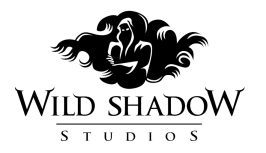
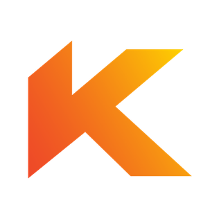
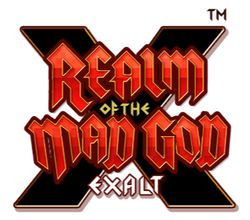
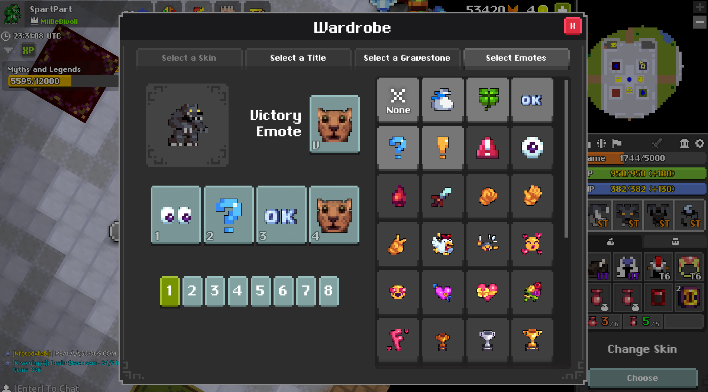

-
2009 WildShadow
In late 2009 a game development competition called Assemblee began on the TIGSource forums. The competition was broken into two parts:
Part 1: Artists and musicians created graphics, sound effects, and music. Part 2: Developers used the winning art from Part 1 to create a game. RotMG came in third place.
Many games were made for this competition using these free non-commercial resources. You'll find some of these still out there today. WildShadow purchased commercial licenses for the works they used and continued working on the game long after the competition was over.
On June 20, 2011 Realm of the Mad God was released on the Chrome Web Store. This was the first time RotMG was made available outside of the official, original website.
On October 31, 2011 the game was released on Kongregate.
A new developer, Willem Rosenthal, was hired sometime in November or December 2011 and was tasked with creating artwork and design.
On February 20, 2012 the game was released on Steam -
2012 Kabam
WildShadow announced on June 18, 2012 that they had been acquired by Kabam. Alex and Rob both departed to explore new challenges while Willem remained with Kabam and continued developing new content until his departure on June 21, 2013.WildShadow announced on June 18, 2012 that they had been acquired by Kabam.
Alex and Rob both departed to explore new challenges while Willem remained with Kabam and continued developing new content until his departure on June 21, 2013.
Kabam's ownership was marked primarily by a heavy increase in monetization, particularly from the introduction of functional pets and later from Mystery Boxes and Set Tier items. Kabam also introduced several new dungeons; most of these were medium-level, but some dungeons (particularly The Shatters) during the later Kabam period helped advance the endgame. -
2016 Deca

Kabam announced on June 23, 2016 that Realm of the Mad God was being “transferred” to Deca Games. At the same time Deca Games posted a more detailed announcement on their blog. The game officially re-launched under Deca's complete control on July 21, 2016.
Because Adobe will no longer support Adobe Flash, the existing engine of RotMG, the game was ported to the Unity engine on April 15, 2020. The “remastered” version is called Realm of the Mad God Exalt. -
2020 Deca Exalt
Realm of the Mad God Exalt is the name given to the Unity port of Realm of the Mad God, which was officially released on July 22, 2020.
The game's previous engine, Adobe Flash, is now discontinued by Adobe after 2020. Therefore, porting the game was necessary for continued content updates.
Exalt exited the beta phase and was officially released on July 22, 2020, coinciding with the release of Oryx's Sanctuary. The Flash client was unsupported on September 23, 2020.
Compared to the Flash version, the Unity port features an updated GUI, improved security, significantly better performance, updated sound design including a new soundtrack, among other features.
More information about Exalt's progress and future plans can be found in the official site. -
Present
Public testing (PT) is used to garner community feedback on specific content. Though testing is usually closed to the public, it becomes fully open for a few days after DECA announces a new session. The details of new sessions are posted on the Public Testing section of the forums and on the RotMG Blog.
Download the game!